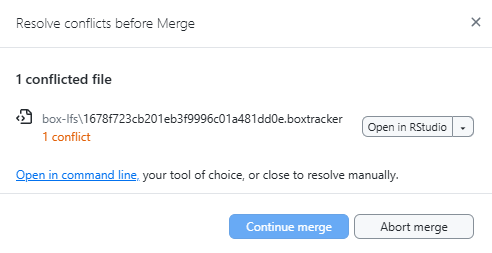

blfs is an R package that makes it easier to work with large files in GitHub projects.
By default:
GitHub doesn’t let you upload files larger than 100 MB.
-
Git LFS (Large File Storage) raises the limit to 2 GB, but it still has problems:
Free accounts have a storage cap.
Even if you delete a file, it stays hidden in the project’s history and still takes up space.
Completely removing these files often means recreating the whole repository and losing commit history.
For the Wildfire and Water Security (WWS) project, we have unlimited storage on Box.
blfs lets us keep the big files in Box while still using GitHub for everything else — so we get the best of both worlds.
How it works
Instead of storing the big file directly in GitHub,
blfscreates a small pointer file that says where the real file lives in Box.These pointer files have the extension
.boxtrackerand are stored in GitHub.The actual large files live in Box, inside a special
box-lfsfolder.
Installation
Install the package from GitHub:
# install.packages("remotes")
remotes::install_github("wildfire-water-security/WWS-box-lfs")Box Drive
Box LFS works best if you also install Box Drive from Box.
Lets R move files to and from Box
Tracked files will be automatically synced on Box
Without Box Drive, you will be prompted to manually upload and download files from Box.
Basic Usage
Creating a new Git repository with Box LFS
If you already have a folder you want to turn into a GitHub repository (repo) that uses Box for large files, start with:
new_repo_blfs(dir = new_dir, size = 0.0001, box_dir = box_tmp)
#> ℹ the following files will no longer be tracked by git:
#> example-files/example-shp.*
#> example-files/large-file1.txt
#> example-files/large-file2.txt
#> ✔ Large files are now backed up in Box.diris the folder you want to set up.sizeis the minimum size (in MB) that counts as a “large” file. Default is 10 MB, but here we use a small number so our example files are included.
With this, your tracked large files will be uploaded to the specified Box folder
Cloning a GitHub repository using Box LFS
When you clone a GitHub repo that uses Box LFS, you get the code and .boxtracker pointer files — but not the big files themselves. To download those files and put them in the right place, run:
clone_repo_blfs(dir=clone_dir)
#> ✔ Large files have been fetched from Box and put in repository.-
diris the folder with the cloned repository.
With this, your cloned repo will have the correct large files in the right locations within your local project directory.
Pushing a GitHub repository using Box LFS
Before you push changes to a repository that uses Box LFS, you need to:
Check if any tracked files have been updated.
See if there are new large files that should be tracked.
You can do both with:
push_repo_blfs(dir=clone_dir, size=0.0001)
#> ✔ Large files have been synced with Box.-
diris your local repository folder. -
sizeis the minimum file size (in MB) that counts as a “large” file. Default is 10 MB. - Here we use a smaller number so our example files are included.
Any new or updated file will be updated on Box and the .boxtracker will be updated so others know there’s a new copy of the file.
Pulling a GitHub repository using Box LFS
After you pull changes from a GitHub repository that uses Box LFS, you need to:
Check if any tracked files have been updated on Box.
Check if any local tracked files should be pushed before downloading the updated files.
You can do both with:
pull_repo_blfs(dir=clone_dir)
#> ✔ Large files have been fetched from Box and put in repository.
#> ✔ Large files have been synced with Box.-
diris your local repository folder.
Any new or updated files stored on Box will be copied from Box into your local project directory
Best Practices
In any Git project, it’s good practice to:
Pull changes from GitHub before you start work each day.
Push your changes to GitHub when you’re done for the day or after making a big change.
With Box LFS, this is even more important.
Box LFS doesn’t track every little change inside a large file; it only stores the new version each time you update it.
If you don’t keep up with changes other people make, you can run into something called a merge conflict.
A merge conflict happens when:
You commit changes to a tracked file locally (but don’t push them to GitHub yet).
Meanwhile, someone else changes that same file in their copy and pushes it to GitHub.
-
When you finally try to push your changes, GitHub says:
“These two versions of the file don’t match — I can’t decide which one is correct.”
In Box LFS projects, this usually means the .boxtracker files for that large file are different between your commit and theirs.
The safest way to avoid this? Pull first, push often.
What to do if you get a merge conflict
If you try to pull or push changes and Git shows something like:

Don’t worry, it just means your version of the file and the version on GitHub are different, and Git wants you to choose which one to keep.
Step 1: Decide which version to keep
Open the conflicted file in R or a text editor to look at the two versions. Open up the file in Box to see the most recent version.
Ask yourself:
Did you upload the latest version of the large file to Box? → Keep your pointer file.
-
Did someone else upload a newer version to Box? → Keep their pointer file.
Tip: If both versions of the large file are important, rename one before uploading to Box so the project can keep both without overwriting. You can then update
path-hash.csvand its.boxtrackerfile to match.